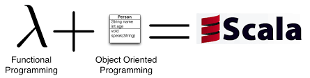
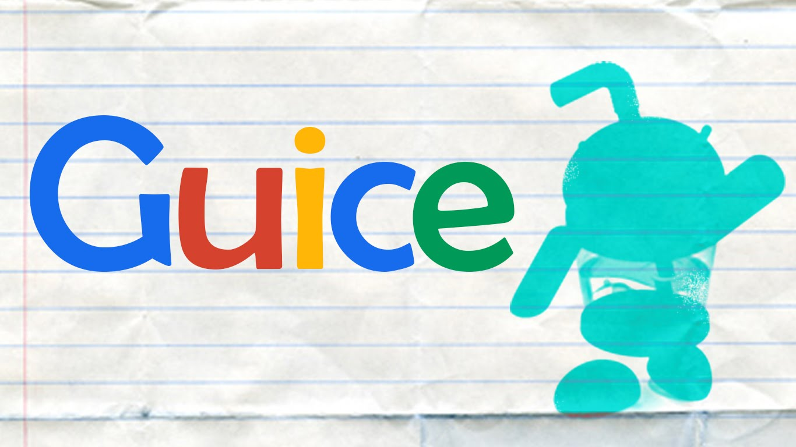

Building Web Services
with the Play Framework
by Rob Perry
04.29.2016
May 2008
Play 1.0 – originally released

March 2012
Play 2.0 – rewritten and released

Enables Rapid Development
- Hot Reloading
- Database Migrations
- Asset Pipelines
Supports Modular Development
- InnerSource Modules
- Community Modules
Supports Dependency Injection
 or
*Provides lifecycle hooks
Everything is a stream...
Reactive Manifesto
- Responsive
- Resilient
- Elastic
- Event Driven
Embraces Modern Web
- WebSockets
- Server Sent Events (SSE)
- CORS
Embraces TDD
- JUnit
- Selenium
Community Persistence
Server-Side Rendering
Templating
Security Features
- Pluggable Authentication
- CSRF Filter
Demo/Walkthrough
$ activator new demo
$ activator ~run
Resourceshttps://www.lightbend.com/
https://www.playframework.com/
https://github.com/n3integration/tweet-search
@n3integration